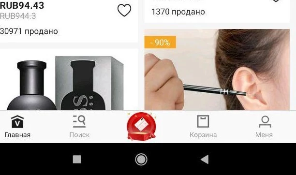

В этой статье я расскажу вам как заработать на аналоге Алиекспресс. За очень простую работу можно получить хороший доход. Все что нам понадобится это смартфон на Андроид или эмулятор на ПК.
И так, поехали. Берез свой телефон и идем по ссылке - Vova. Прокручиваем в самый низ и нажимаем кнопку для скачивания приложения (Она может быть не внизу). Скачиваем приложение и регистрируемся в нем. Заполняем все данные что оно попросит.
Далее идем в пункт для заработка кристаллов - кнопка по центру
Здесь мы будем видеть наш баланс и выводить потом деньги. Нажимаем кнопку Получить кристаллы, их мы будем обменивать на реальные деньги. Копируем ссылку приглашения. Далее распространяем эту ссылку по всем своим друзьям и знакомым, они регистрируются и мы получаем эти заветные кристаллы.
На этом заработок не ограничивается и начинается самое интересное.
Когда заработали и вывели рублей 300-400 идем на сайт Socpublic регистрируемся там и пополняем баланс рублей на 200. Далее создаем задание где пишем что нужно зарегистрироваться в приложении по нашей ссылке. Вставляем ссылку которую скопировали в приложении Вова и расписываете что нужно сделать. Цену указываем 5-7р. Обязательно укажите что если люди уже регистрировались в этом приложении ранее то вознаграждение они не получат. Запускаете задание в работу.
На этом начинается пассивный доход. Люди регистрируются - Вы получаете кристаллы.
Вот и все. Всем удачи!